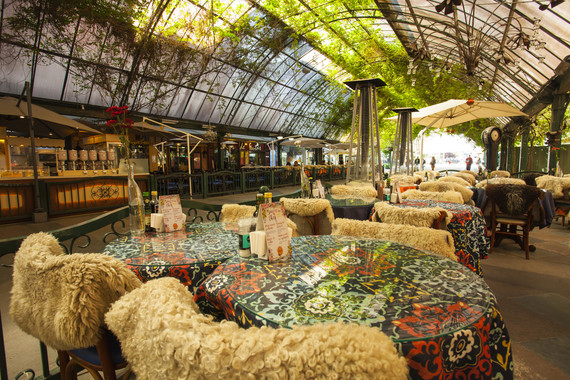

Gramado é muito mais do que lareira e vinho no inverno. As estações do ano são
bem definidas e proporcionam verdadeiros espetáculos de experiência única e da natureza exuberante. Víva essa experiência com Passeios inesquecíveis.
Gramado é um verdadeiro pedaço da Europa no Rio Grande do Sul, a cidade possui diversos pontos turísticos, dentro os quais se destacam:
Rua Coberta

Um dos pontos mais atrativos de Gramado é a Rua Coberta. Coberta por um teto translúcido, possui uma linda decoração de plantas pendentes. Além disso, a Rua Coberta fica no centro de Gramado e na frente do Palácio dos Festivais, que é onde acontece o famoso Festival de Cinema de Gramado.
Lago Negro
O Lago Negro é um dos principais pontos turisticos Gramado. A paisagem dele é semelhante a de muitos locais da Europa, rodeado por pinheiros, hortênsias no Inverno e azaleias no Verão.
Rua Torta
Uma rua inspirada na famosa Lombard Street da Califórnia, mas com todo um toque especial da charmosa cidade de Gramado. A Rua Torta na Serra Gaúcha foi criada para eliminar degraus da colina e permitir a passagem de automóveis. Com o tempo foi se tornando um dos pontos da cidade, principalmente para tirar fotos.
Snowland
O complexo fechado tem diversas atrações que envolvem neve. O parque possui uma montanha de neve artificial e uma pista onde os visitantes podem praticar snowboard, descer com bóia de neve e até andar com moto de neve. O Snowland oferece roupas e calçados apropriados para as atividades, mas é sempre bom levar roupas de frio extra porque algumas áreas do parque
são abaixo de zero.